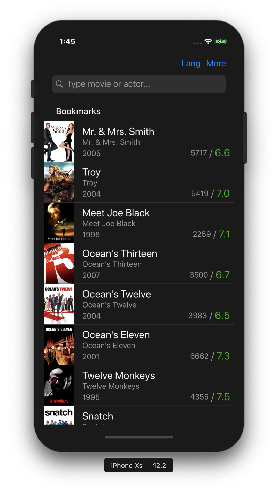
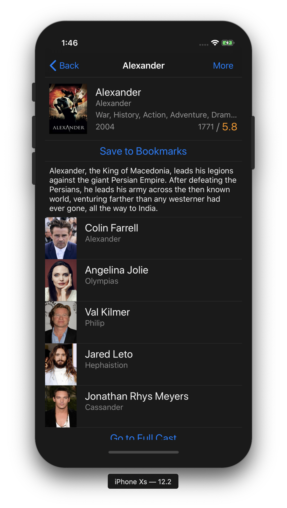
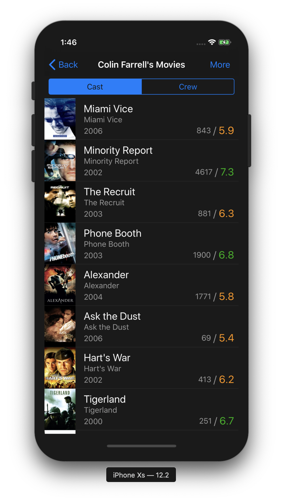
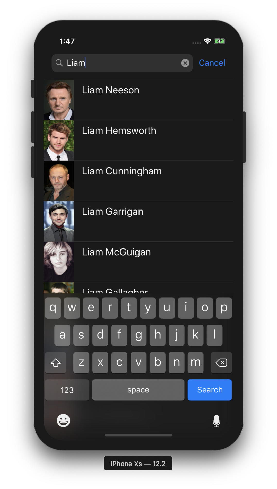

CinePicker
Made by Maxim Krylov, 2019Description
Sometimes people face a problem when they need to save somewhere a movie to watch it later. Actually they don't want to register in somewhere to do that, just want to pick a movie and save it not to forget...
CinePicker is a very simple app to search and pick movies which can be used in such situations. It provides a lightweight mechanism for searching movies by titles or people.
The app provides basic movie information like name, original name, genres, description and people who participated in this, and also it provides quite simple way to save found movie, and to access it later.
You can also try to find movies by similar ones.
Screenshots




Privacy Policy
By using this app you accept the following Privacy Policy.